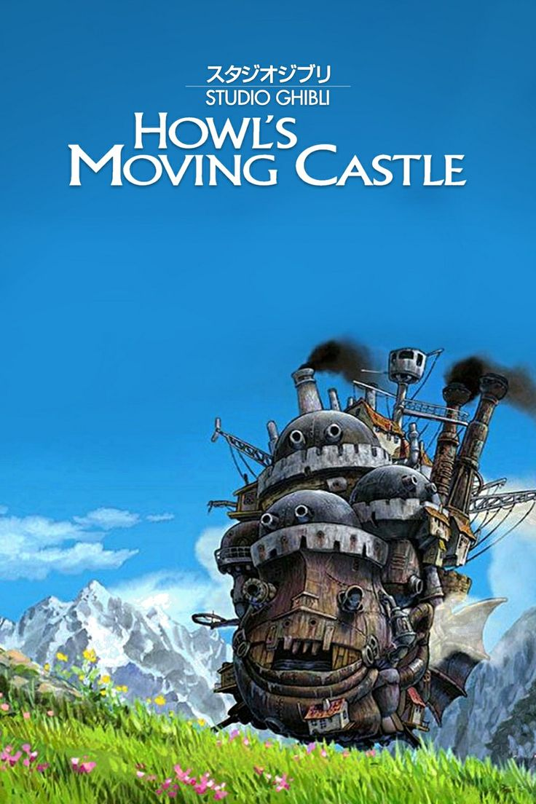
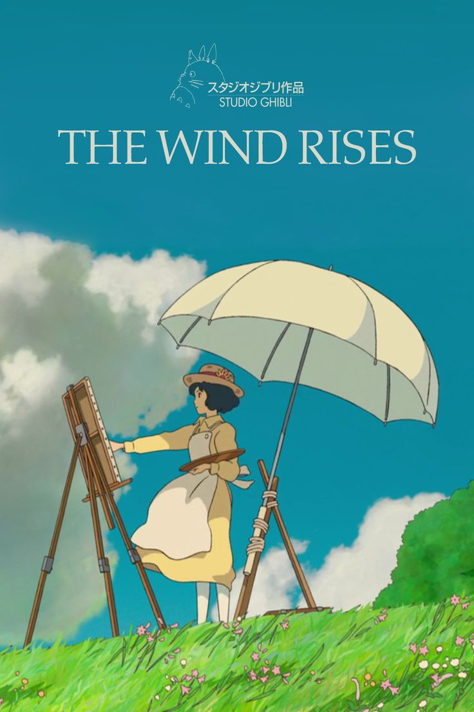
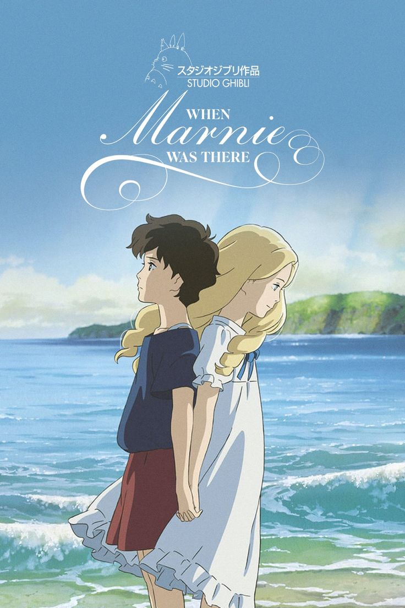
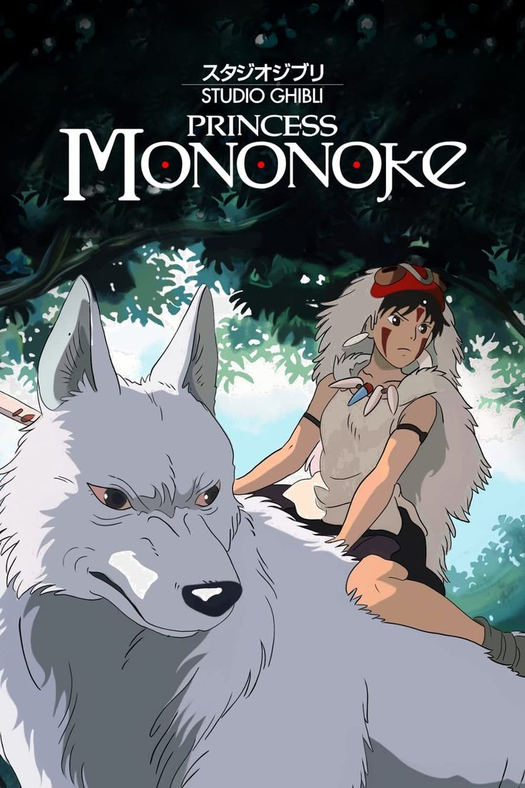

| movie poster |
release date |
description |
|  |
5 September 2004 |
It tells the story of Sophie, a young milliner who is turned into an elderly
woman by a witch who enters her shop and curses her. She encounters a wizard
named Howl and gets caught up in his resistance to fighting for the king. |
|  |
20 July 2013 |
Is a fictionalised biographical film of Jiro Horikoshi (1903-1982),
designer of the Mitsubishi A5M fighter aircraft and its successor,
the Mitsubishi A6M Zero, used by the Empire of Japan during World War II. |
|  |
19 July 2014 |
The film follows Anna Sasaki while she stays with her relatives in a town in the Kushiro wetlands in
Hokkaido. Anna comes across a nearby abandoned mansion, where she meets Marnie, a mysterious girl who
asks her to promise to keep their secrets from everyone. |
|  |
12 July 1997 |
The story follows a young Emishi prince named Ashitaka, and his involvement in a struggle between the
gods (kami) of a forest and the humans who consume its resources. |
 |
20 July 2001 |
Spirited Away tells the story of Chihiro "Sen" Ogino, a ten-year-old girl who, while moving to a new
neighborhood, inadvertently enters the world of kami (spirits of Japanese Shinto folklore). |